SOLIDWORKS • CAD • COMPLEX ASSEMBLY DESIGN
R2-D2 SolidWorks Assembly
Design and construction of a near life-size, multi-component R2-D2 CAD assembly incorporating complex geometry, moving mechanisms, detailed subassemblies, and engineering drawings.

01 / OVERVIEW
Recreating a complex mechanical character as a full CAD assembly.
The goal of the project was to create a near life-size SolidWorks model of R2-D2 using real-world dimensions and a large collection of individual parts and subassemblies.
The final assembly included the cylindrical body, hemispherical head, legs, feet, retractable third leg, rocket boosters, control arms, utility tools, sensors, and multiple deployable mechanisms.
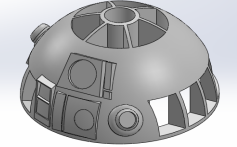
R2-D2 head assembly developed in SolidWorks
02 / SYSTEM ARCHITECTURE
A large multi-part mechanical assembly.
The complete model contained 16 major parts and subassemblies, with many of those subassemblies containing between 3 and 20 individual components.
Main Body
Cylindrical body, structural interfaces, detailing, and mounting regions.
Head
Hemispherical head containing custom flaps, sensors, projectors, and deployable tools.
Leg System
Main legs, feet, retractable third leg, and rocket-booster assemblies.
Utility Systems
Buzzsaw, utility arm, multifunction arm, spacecraft control arms, and maintenance tools.
Sensors
Communication sensor, periscope, optical components, and head-mounted devices.
Accessories
Lightsaber, drink-serving arm, fire extinguisher, and other deployable parts.
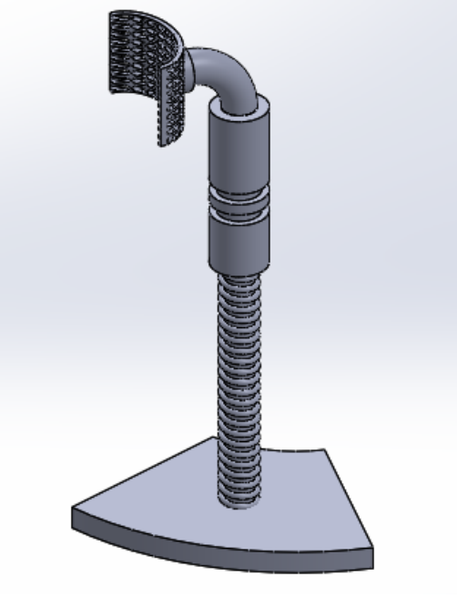
Communication sensor CAD model
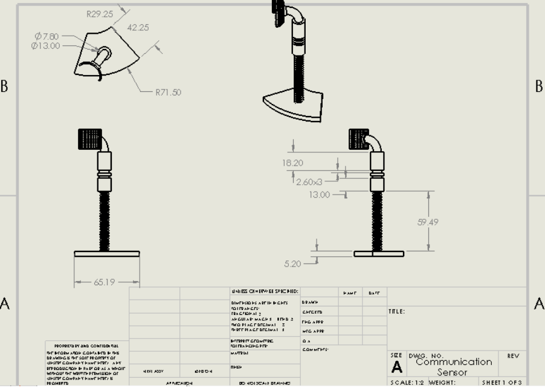
Communication sensor engineering drawing
03 / MY CONTRIBUTION
Head design, deployable tools, and detailed subassemblies.
My assigned components
I was responsible for modeling R2-D2's hemispherical head, Luke's lightsaber, communication sensor, and drink-serving arm.
I also created the custom head flaps, performed the head detailing, and developed the initial flap mating approach used to allow the panels to open and close.
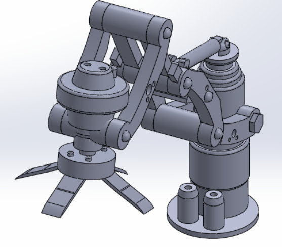
Drink-serving arm assembly
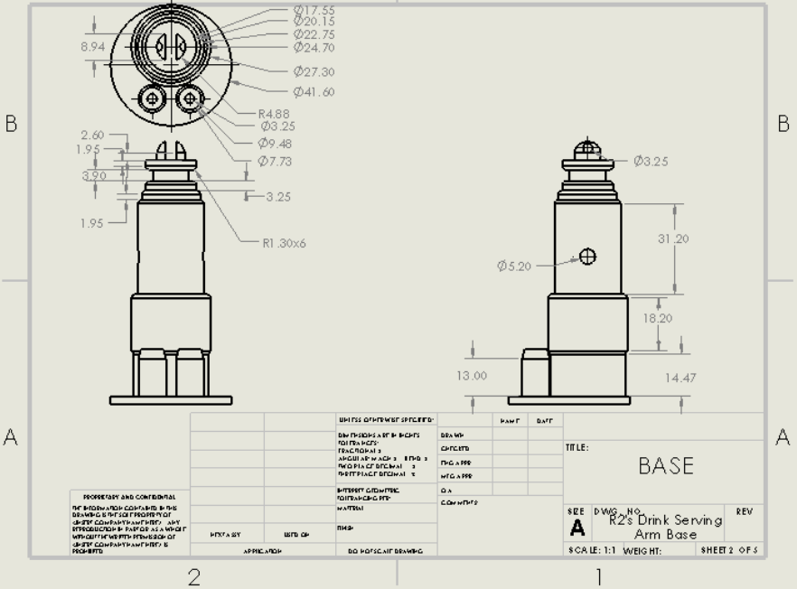
Drink-serving arm base
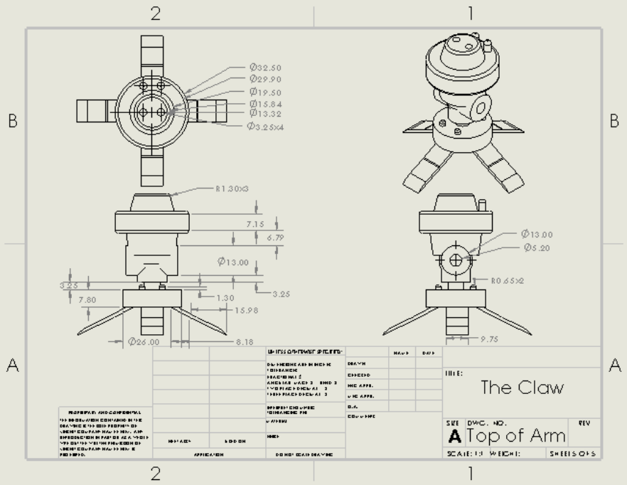
Drink-serving claw
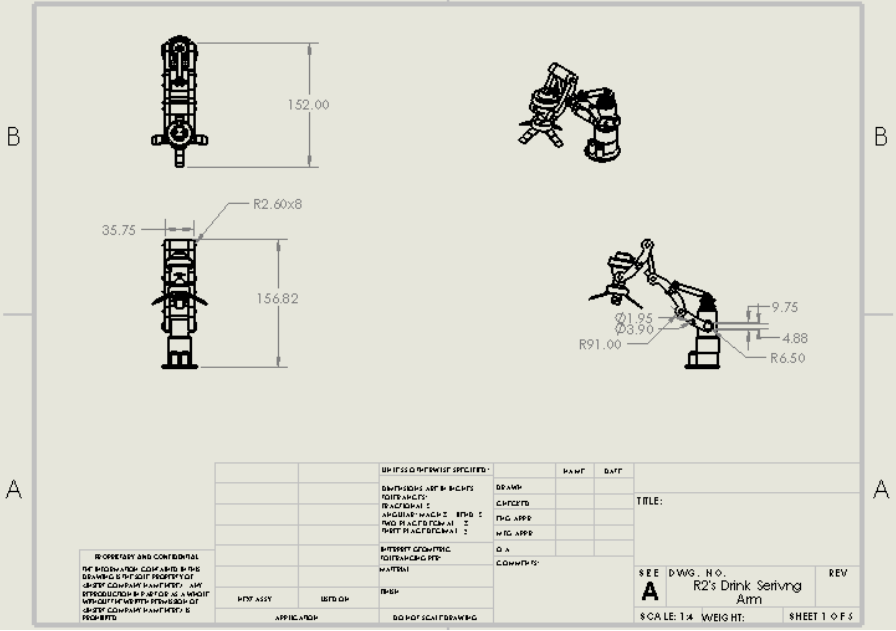
Complete drink-serving arm assembly drawing
04 / HEAD MODELING
Building detailed geometry onto a curved surface.
The hemispherical head was one of the most challenging parts of the project because features and openings had to be placed accurately across curved geometry.
Multiple reference planes were created around the curved surface to support extruded cuts for deployable flaps and extruded features for sensors, projectors, and other head-mounted components.
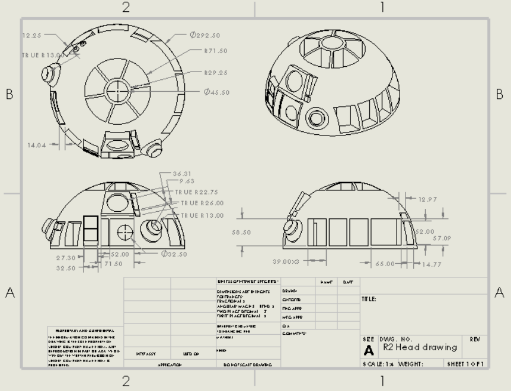
Head assembly engineering drawing
05 / SUBASSEMBLIES
Detailed mechanisms built from multiple components.
Drink Serving Arm
A 19-part subassembly involving multiple revolved and extruded components, bolts, lofted claw geometry, circular patterns, and assembly constraints.
Communication Sensor
A five-part assembly using patterned features, helix/spiral geometry, swept profiles, extruded components, and final assembly mates.
Luke's Lightsaber
Modeled using revolved geometry, linear patterns, swept features, detailed grips, and dimensional scaling to fit inside a head compartment.
Head Flaps
Custom curved panels and hinge geometry developed to integrate with the hemispherical head and allow controlled opening motion.
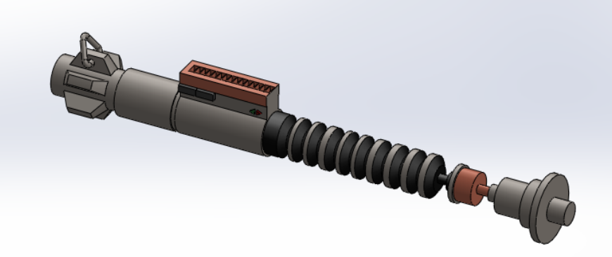
Lightsaber CAD model
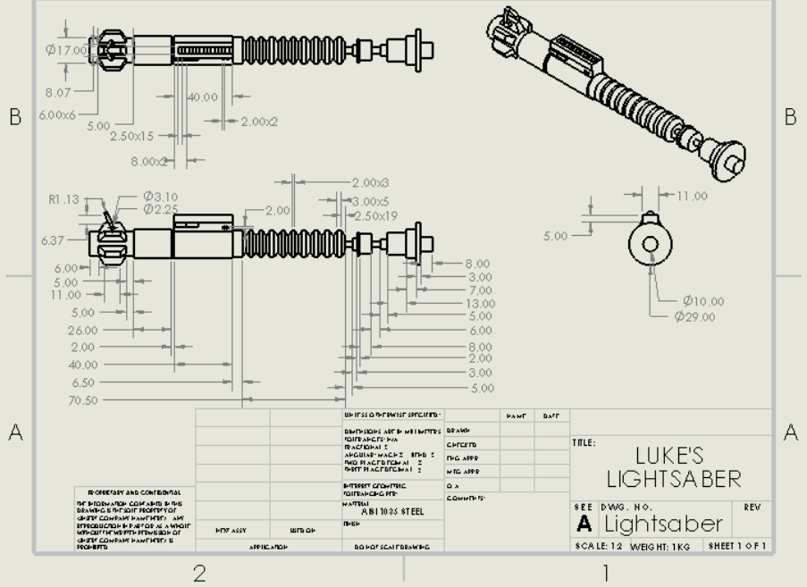
Lightsaber engineering drawing
06 / ASSEMBLY DESIGN
Making the model move correctly.
Assembly mating was one of the most demanding parts of the project because many tools and flaps had to rotate, slide, retract, or deploy while remaining constrained within the overall geometry.
Concentric & Coincident Mates
Used extensively to locate shafts, pivots, fasteners, and connected components.
Limit Angle
Controlled the permitted movement of rotating tools, flaps, and articulated parts.
Distance & Limit Distance
Controlled sliding and retractable components while maintaining realistic motion.
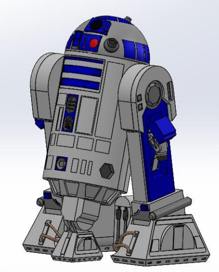
Complete R2-D2 SolidWorks assembly
07 / ENGINEERING CHALLENGES
Complex geometry, motion, and scaling.
Modeling features onto the curved head required the creation of multiple reference planes and careful positioning of cuts and details.
Assembly motion also required extensive trial and error because many components needed to remain functional without interfering with surrounding geometry.
Scaling was another important challenge. Several parts had to be resized as the overall assembly evolved so that the subassemblies remained proportional and physically compatible.
08 / ENGINEERING DRAWINGS
Detailed documentation of the final design.
The project included a full working-drawing package covering the overall assembly as well as individual components and subassemblies.
These drawings documented dimensions, orthographic views, isometric views, component geometry, and assembly information for the completed CAD model.
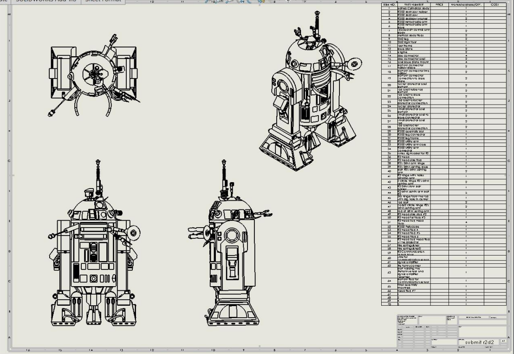
Full assembly drawing and bill of materials
09 / ENGINEERING TAKEAWAY
Complex CAD is really systems engineering.
This project required far more than modeling individual shapes. It required coordinating dimensions, interfaces, moving mechanisms, subassemblies, reference geometry, and assembly constraints across a large mechanical system.
It gave me extensive hands-on experience with SolidWorks part modeling, advanced assembly design, technical drawings, and iterative mechanical design.
FULL PROJECT DOCUMENTATION
R2-D2 SolidWorks Design — Final Engineering Report
View the complete project report for additional details on component design, CAD modeling, mechanical assemblies, engineering drawings, bill of materials, and integration of the complete R2-D2 system.
View Full Engineering Report ↗10 / TECHNICAL SKILLS